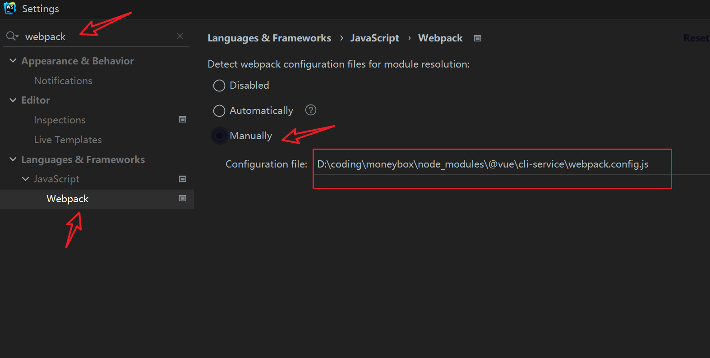
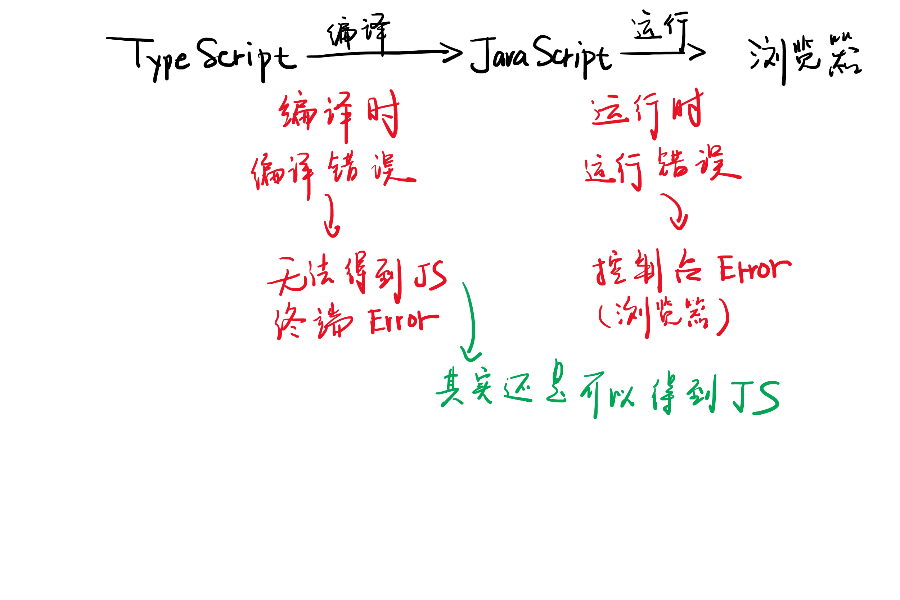
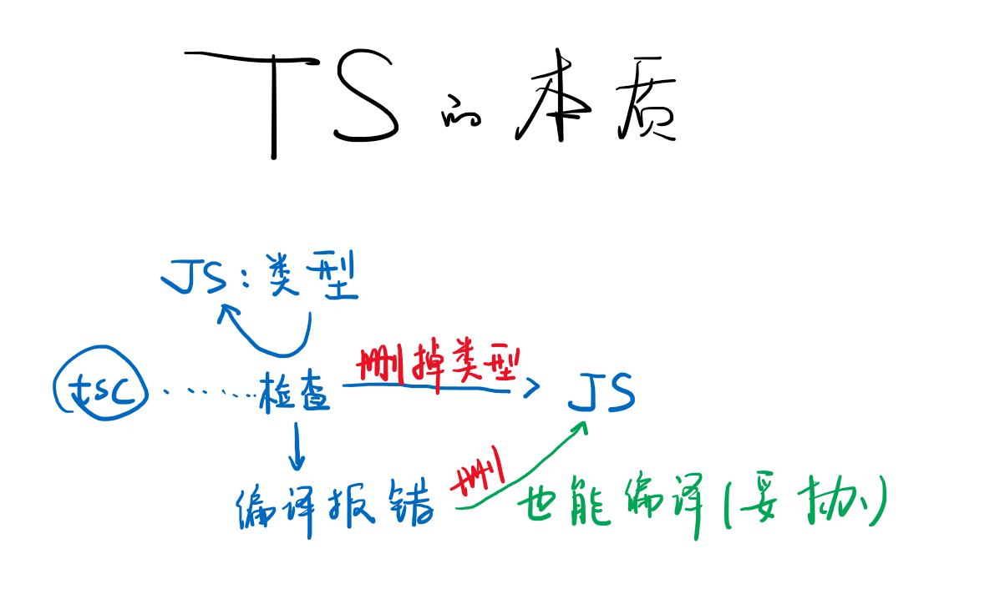
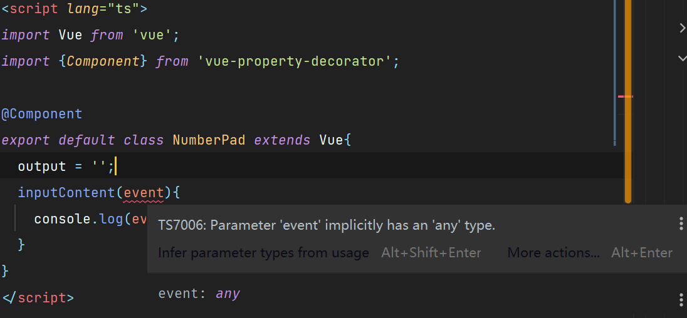
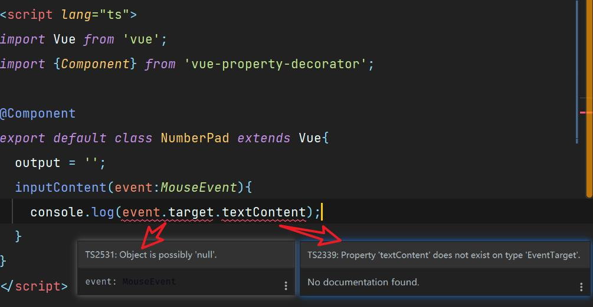

MoneyBox项目总结
@import ~@/assets/style/... 引入scss文件,无法识别目录
- 解决方法:

动态选中class 使用 :class
1 | <template> |
Error this dependency was not found
- Error详情
1
error failed to compile with 1 error 下午11:25:29 this dependency was not found: * core-js/modules/es.error.cause.js in ./node_modules/cache-loader/dist/cjs.js??ref--12-0!./node_modules/babel-loader /lib!./node_modules/cache-loader/dist/cjs.js??ref--0-0!./node_modules/vue-loader/lib??vue-loader-options!./src/components/money/types.vue?vue&type=script&lang=js&
- 解决方法:升级了package.json文件中”dependencies”的”core-js”版本;https://stackoverflow.com/questions/65608779/vue-js-this-dependency-was-not-found-core-js-fn-promise
Error Eslint vue missing return type on function
- warning: Missing return type on function (@typescript-eslint/explicit-module-boundary-types)
- 解决方法:https://stackoverflow.com/questions/63609709/stop-typescript-eslint-explicit-module-boundary-types-to-be-applied-on-vue-compo
svg v-bind:xlink-href 已弃用
- 直接使用 href
1
2
3
4
5
6<template>
<svg class="icon">
<use :href="'#'+name"/>
</svg>
</template>组件
- 如何使用Typescript来声明Vue组件
- CRM学习: 三方vue-property-decorator:https://github.com/kaorun343/vue-property-decorator#Prop
JS组件(构造选项)
1 | <script lang="js"> |
TS组件(类组件 + 装饰器:JS or TS)
1 | <script lang="ts"> |

mixin
- 减少多次重复的代码书写,提取成文件,然后继承
1
2
3
4
5
6
7
8
9
10
11
12
13
14
15
16
17
18
19
20-- src/mixin/tagHelper.ts --
import Vue from 'vue';
import Component from 'vue-class-component';
export class TagHelper extends Vue {
createTag() {
const name = window.prompt('请输入标签名');
if (!name) {return window.alert('标签名不能为空');}
this.$store.commit('createTag', name);
}
}
export default TagHelper;
-- Tag.vue -- 使用时 继承
import tagHelper from '@/mixins/TagHelper';
export default class Tags extends mixins(tagHelper) {}
computed:计算属性
- 自动根据依赖去缓存更新,可以节省计算的次数
- 如:获取Vuex的数据 Vuex
1
2
3
4
5
6
7
8
9// 获取 Vuex的数据
({
components:{Tags,FormItem,Types,NumberPad},
computed:{
count(){
return this.$store.state.count
}
}
}) - 注: 在TS语法中 用getter 语法去写
1
2
3
4export default class Money extends Vue {
get recordList() {
return this.$store.state.recordList;
}
watch 装饰器写法
1 | ('value') |
Prop 装饰器
1 | (Number) xxx: number | undefined; |
.sync 修饰符
- 若给一个组件初始值,在其update时得到最新的值,一般使用.sync
<Types :value="record.type" @update:value="onUpdateType"/> 等价于 <Types :value.sync="record.type"/>
1 | -- Tags.vue -- |
v-modle
- 代码简写如下
:value="x" @input="x = $event.target.value" <==> v-modle="x" - 尽量不使用v-modle,(避免理解误差)
1 | <template> |
引入单独文件 插槽<slot/>
1 | --Layout-- |
<layout></layout>中插入的即<slot>插槽
1 | --money-- |
svg symbols
svg图标不会自动换色
- 解决方法:删除svg文件中的fill属性
localStorage
- 注: 只能存5-10M(浏览器差异)
表驱动编程
1 | <li :class="{selected:value === '-',[classPrefix+'-item']:classPrefix}" |
模块化思想
重构技巧
命名严谨性
- 变量名语义化和组件相关
Vue Router
- 使用Vue Router 做的页面叫做单页面应用 SPA: single page Application
- hash模式
- history模式
Vuex
- 实质是 window.store
- Vuex
TS的本质

写Vue组件的三种方式(单文件组件)
- 用JS对象
1 | export default { data,props,methods,created, ...} |
- 用TS类
<script lang="ts">
1 |
|
- 用JS类
<script lang="js">
1 | @Component |
强制指定类型
若不指定类型:
- 指定参数event类型: event:MouseEvent

- 强制指定event.target类型

强制指定类型:
1 | export default class NumberPad extends Vue{ |
vue里的循环
1 | <ul class="current"> |
深拷贝
1 | saveRecord(){ |
数据类型 和 类
1 | type Record = { |
数据库升级(数据迁移策略)
1 |
|
如何在ts文件引入js(model.js)
1 | --- money.vue--- |
model.js 改为 model.ts
- 直接修改后缀,然后解决报错
- 当遇到类型声明在其他文件时,可将类型提到custom.d.ts 文件中,整个项目都可以引用整个文件,不需要引用
- 如果已经在custom.d.ts中定义了RecordItem,但还是报错,显示未定义,可以在eslintrc.js中加一行配置
1
"globals":{"RecordItem": true}
1 |
|
内联元素居中
- 给其父类加 text-align:center;
字符串的联合类型
create: (name: string) => 'success' | 'duplicated' //联合类型
$route & $router
- this.$route.params 用来获取路由信息
- this.$router.push(‘/404’) router是路由器,用于转发等操作
- 回退操作,也可使用 $router.replace
@click.native
- 当click 需要传递一下时可使用.native
1
2--- labels.vue---
<Button class="createTag" @click.native="createTag">新建标签</Button> - 也可 @click=”$emit(‘click’,$event)”
1
2
3
4--- Button.vue---
<button class="button" @click="$emit('click',$event)">
<slot/>
</button>
全局数据管理
封装全局变量 解决标签不同步的问题
1 | ---main.ts--- |
如按上述方法去封装全局变量,会造成如下问题
- 如上代码所见:
- 全局变量太多
- 严重依赖 window
1
2
3
4
5
6
7
8
9
10
11
12
13
14
15
16
17
18
19
20
21
22
23
24
25
26
27
28
29
30
31
32
33
34
35
36
37
38
39
40
41
42
43
44
45
46--- main.ts ---
import Vue from 'vue'
import App from './App.vue'
import './registerServiceWorker'
import router from './router'
import store from './store';
import Nav from '@/components/Nav.vue';
import Layout from '@/components/Layout.vue';
import Icon from '@/components/Icon.vue';
import tagListModel from '@/models/tagListModel';
import recordListModel from '@/models/recordListModel';
Vue.config.productionTip = false;
Vue.component('Nav', Nav);
Vue.component('Layout', Layout);
Vue.component('Icon', Icon);
// window.recordList
window.recordList = recordListModel.fetch();
window.createRecord = (record: RecordItem) => recordListModel.create(record);
// window.tagList
window.tagList = tagListModel.fetch();
window.findTag = (id: string) => {
return window.tagList.filter(t => t.id === id)[0];
};
window.createTag = (name: string) => {
const message = tagListModel.create(name);
if (message === 'duplicated') {
window.alert('标签名重复了');
} else if (message === 'success') {
window.alert('添加成功');
}
};
window.removeTag = (id: string) => {
return tagListModel.remove(id);
};
window.updateTag = (id: string, name: string) => {
return tagListModel.update(id, name);
};
new Vue({
router,
store,
render: h => h(App)
}).$mount('#app');
解决办法:(模块化思想)
- 全局变量太多:封装到一个对象中
- 严重依赖 window: 消除window的依赖
1
2
3
4
5
6
7
8
9
10-- store/index2.ts --
import recordStore from '@/store/recordStore';
import tagStore from '@/store/tagStore';
const store = {
...recordStore,
...tagStore,
};
export default store;
1 | -- recordStore.ts -- |
值 VS 地址
count = store.count; // 是把 0 复制到 count 值
- 问题代码:
1
2
3
4
5
6
7
8
9
10
11
12
13
14
15
16
17
18
19-- money.vue --
<layout>
{{count}}<button @click="add">+1</button>
</layout>
<script>
count = store.count;
add(){
store.addCount()
}
</script>
-- index2.ts --
const store = {
count:0,
addCount(){
this.count += 1
}
} - 解决办法:
1
2
3
4
5
6
7
8
9
10
11
12
13
14
15
16-- money.vue --
({
components:{Tags,FormItem,Types,NumberPad}
computed:{
count(){
return store.count
}
}
})
<script>
store = store
add(){
store.addCount()
}
</script>
recordList = store.recordList; // 是复制对象(数组也是对象)的 地址
- 如上述值的bug分析,为了统一解决该类问题,无论是对象地址还是值,统一放到 computed中即可
- 解决办法:
1
2
3
4
5
6
7
8
9
10-- money.vue --
({
components: {Tags, FormItem, Types, NumberPad},
computed:{
recordList(){
return store.recordList
}
}
})
如何把 store2 变成 this.$store2
- 两步
1
2
3
4
5
6
7
8
9
10
11
12
13
14
15
16
17
18-- main.ts --
import store2 from '@/store/index2.ts'
Vue.prototype.$store2 = store2; // 在其他地方使用 this.$store2 即可
-- .d.ts --
// 写类型
//1.确保在声明补充的类型之前导入 'vue'
import Vue from 'vue'
// 2. 定制一个文件,补充想要补充的类型
// 在 types/vue.d.ts 里有构造函数类型
declare module 'vue/types/vue'{}
//3.声明为 Vue 补充的东西
interface Vue {
$store2:any
}
}全局状态管理(全局数据管理)的优点
- 解耦: 将所有数据相关的逻辑放入store(也就是MVC中的Model)
- 数据读写更方便:任何组件不管在哪里.都可以直接读写数据
- 控制力更强:组件对数据的读写只能使用store提供的API进行(不排除猪队友直接对tagList 和 recordList 进行push等操作)
Vuex
- state: data
- mutation: method(mutation里只能存放同步的方法)
- action: 调用method(异步操作)
- 换汤不换药,换名词
1
2
3
4
5
6
7
8
9
10
11
12
13
14
15
16
17
18
19
20
21
22
23
24
25
26
27
28
29
30
31
32
33
34
35
36
37
38-- index.ts--
Vue.use(Vuex) // 把 store 绑到 Vue.prototype.$store = store
const store = new Vuex.Store({
state: { // data
count: 0,
},
mutations: {// methods
increment(state,n:number){
state.count += n;
}
},
-- money.vue --
{{count}}<button ="$store.commit('increment',1)">+1</button>
读:
({
components:{Tags,FormItem,Types,NumberPad},
computed:{
count(){
return this.$store.state.count
}
}
})
或者 使用类语法
export default class Money extends Vue{
get recordList(){
return this.$store.state.recordList
}
}
写:store.commit('updataTag',id) 方法名:type 参数:payload
当获取不到commit的返回值时:
state:{
currentTag:undefined
}
读时:$store.state.currentTag安装 Vuex 注意事项
1
2
3
4
5
6
7-- main.ts--
new Vue({
store,
})
-- store/index.ts--
Vue.use(Vuex) 把store 绑到 Vue.prototype.$store = store
::v-deep
1 | <style lang="scss" scoped> |
封装常量 constant
1 | export default Object.freeze([ |
如何声明一个空对象 的类型
1 | const hashTable: { [key: string]: { title: string, items: RecordItem[] } } = {}; |
scss placeholder
1 | %item{ |
ISO 8601
- moment.js 体积太大
- day.js 最佳实践
1
2
3
4
5
6
7
8
9
10
11
12
13
14
15
16
17
18
19
20
21
22
23
24
25
26
27
28
29
30
31
32
33安装dayjs: yarn add dayjs
使用:
-- Statistics.vue--
{{beautify(group.title)}}
-- 使用 js原生 new Date()
beautify(string:string){
const day = dayjs(string)
const now = new Date()
if(dayjs(string).isSame(now,'day')){
return '今天';
}else if(day.isSame(now.valueOf()-86400*1000,'day')){
return '昨天'
}
}
或者
-- 不使用 new Date()
beautify(string:string){
const day = dayjs(string)
const now = dayjs()
if(day.isSame(now,'day')){
return '今天';
}else if(day.isSame(now.subtract(1,'day'),'day')){
return '昨天';
}else if(day.isSame(now.subtract(2,'day'),'day')){
return '前天';
}else if(day.isSame(now,'year')){
return day.format('M年D月')
}else{
return day.format('YYY年MM月DD日');
}
}数据排序
- 对象遍历的顺序不固定,最佳实践为 数组
部署到github
本地预览
1 | yarn global add serve |
手动推送更新至 github pages
- 在vue.config.js 中设置正确的 publicPath
1
2
3
4
5
6module.exports = {
publicPath: process.env.NODE_ENV === 'production'
? '/moneybox-vue-website/'
: '/'
} - 在项目目录下创建deploy.sh文件，内容如下，并运行
- 注：需创建一个新仓库用于存放dist目录下代码，如：moneybox-vue-website，并将地址写到该文件中,取消注释
1
2
3
4
5
6
7
8
9
10
11
12
13
14
15
16
17
18
19
20
21
22
23
24
25
26
# 当发生错误时中止脚本
set -e
# 构建
npm run build
# cd 到构建输出的目录下
cd dist
# 部署到自定义域域名
# echo 'www.example.com' > CNAME
git init
git add -A
git commit -m 'deploy'
# 部署到 https://<USERNAME>.github.io
# git push -f git@github.com:<USERNAME>/<USERNAME>.github.io.git master
# 部署到 https://<USERNAME>.github.io/<REPO>
git push -f git@github.com:Grey-1011/moneybox-vue-website.git master:gh-pages
cd - - 运行 sh deploy.sh
在项目里使用图片部署到github无法生效的问题解决办法：其实就是路径问题，把图片路径改为相对路径
img.src = './qrcode.png'
All articles in this blog are licensed under CC BY-NC-SA 4.0 unless stating additionally.